Ausgewählte Arbeit
CENTRUS
CENTRUS ist ein hochwertiges Wohnquartier im historischen Zentrum von Riga. Zeitgenössische Architektur, private Terrassen, ein begrünter Innenhof sowie Wohn- und Gewerbeflächen bilden ein ruhiges urbanes Ensemble. Ich entwickelte das Webdesign und übersetzte den zurückhaltenden architektonischen Charakter in eine klare digitale Experience – von Informationsarchitektur und visueller Leitidee bis zur Wohnungssuche, Filterlogik, Auswahl der Ausstattungsvarianten und responsiven Nutzung auf mobilen Geräten.
Webdesign · Art Direction · UX/UI
Website besuchen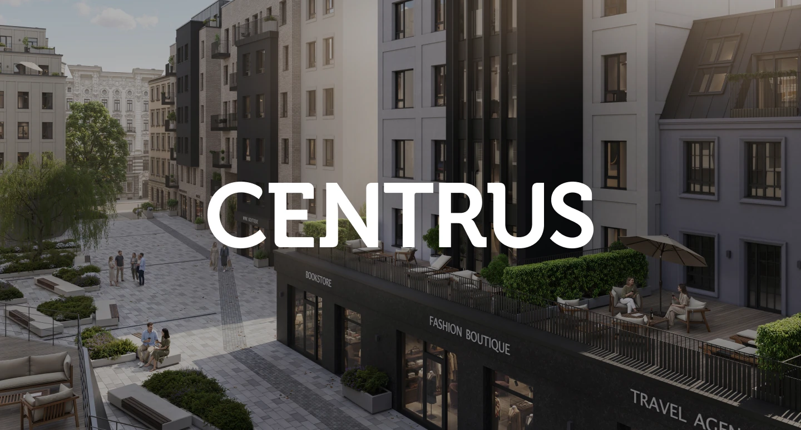
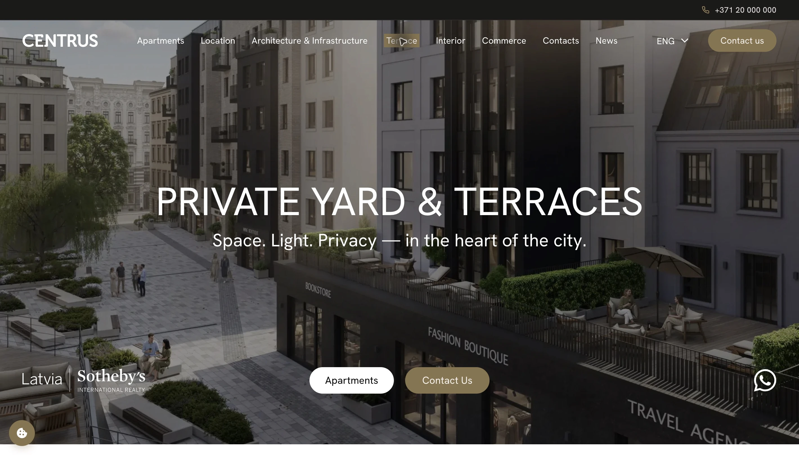
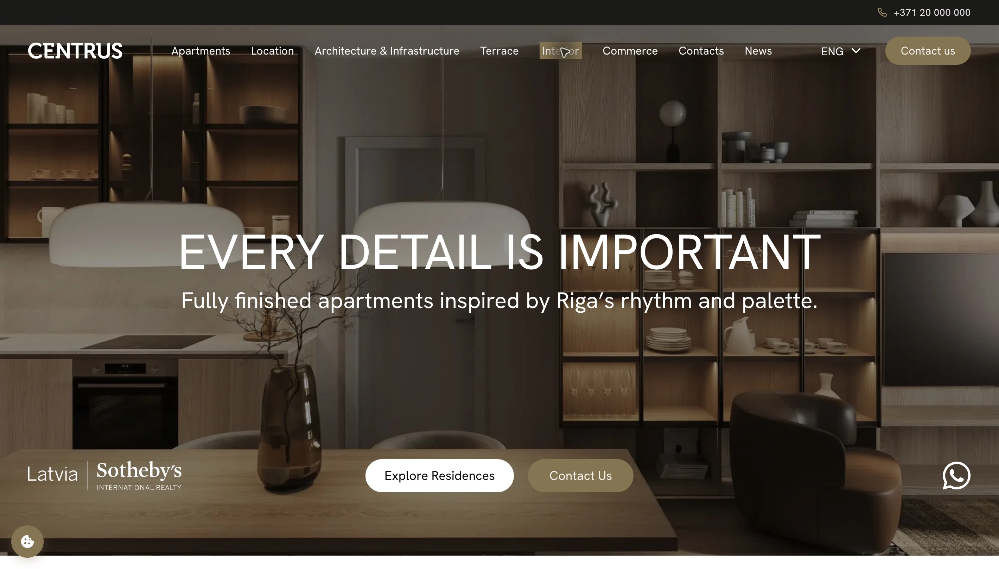
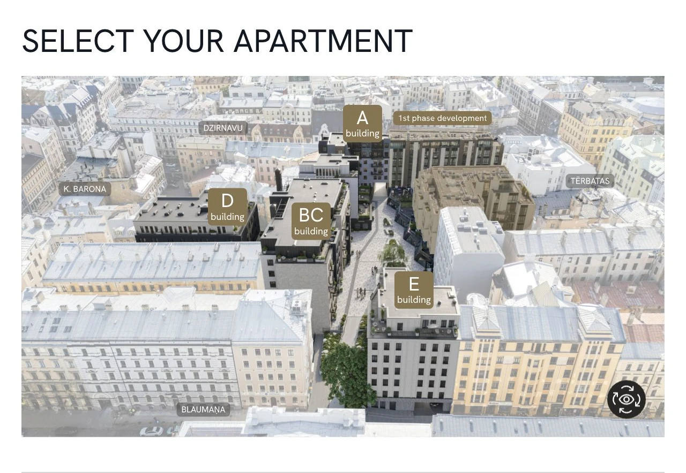
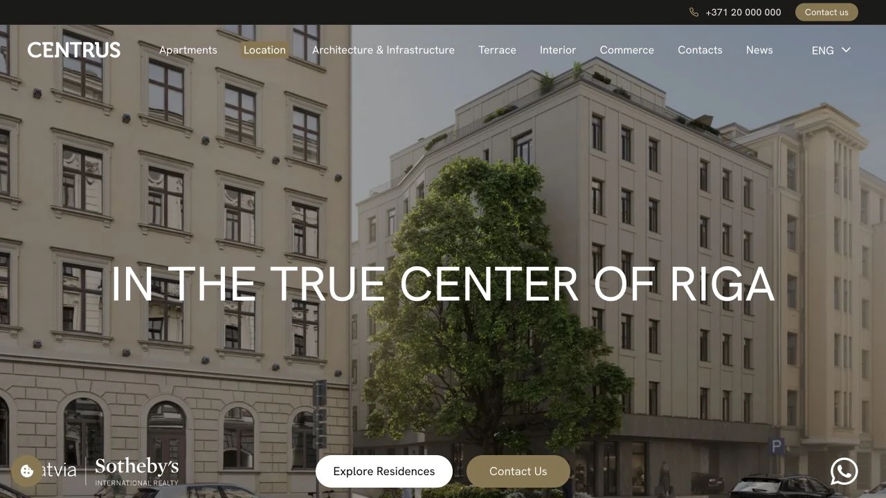
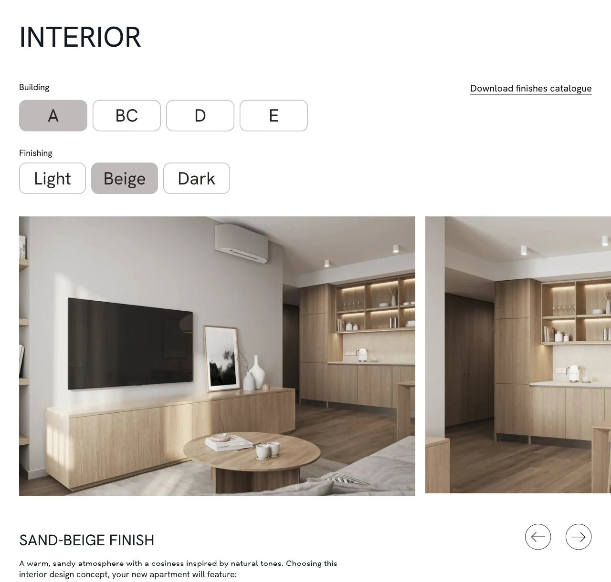
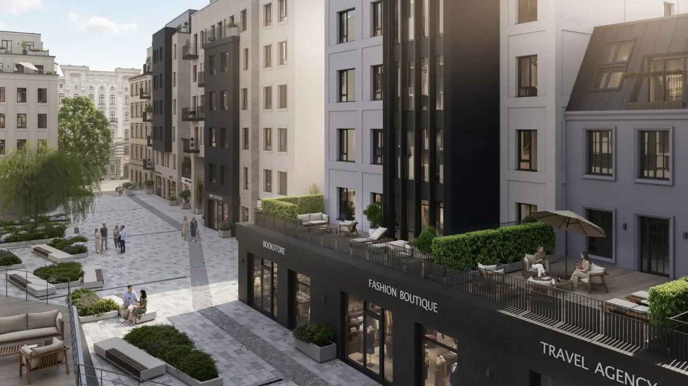
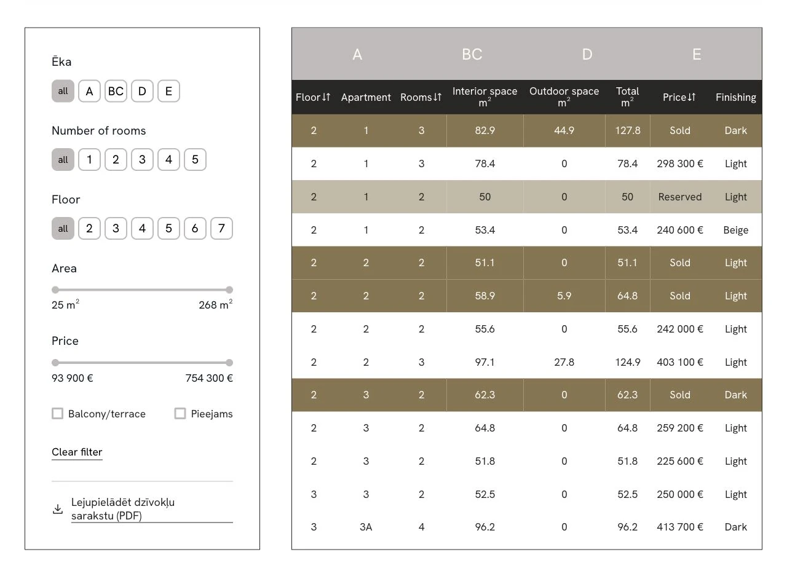
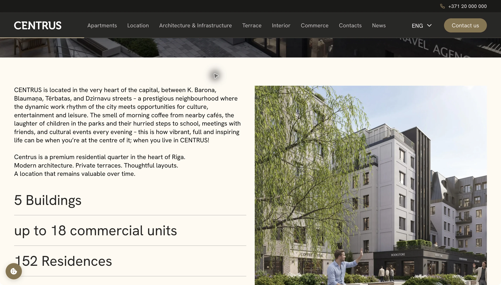
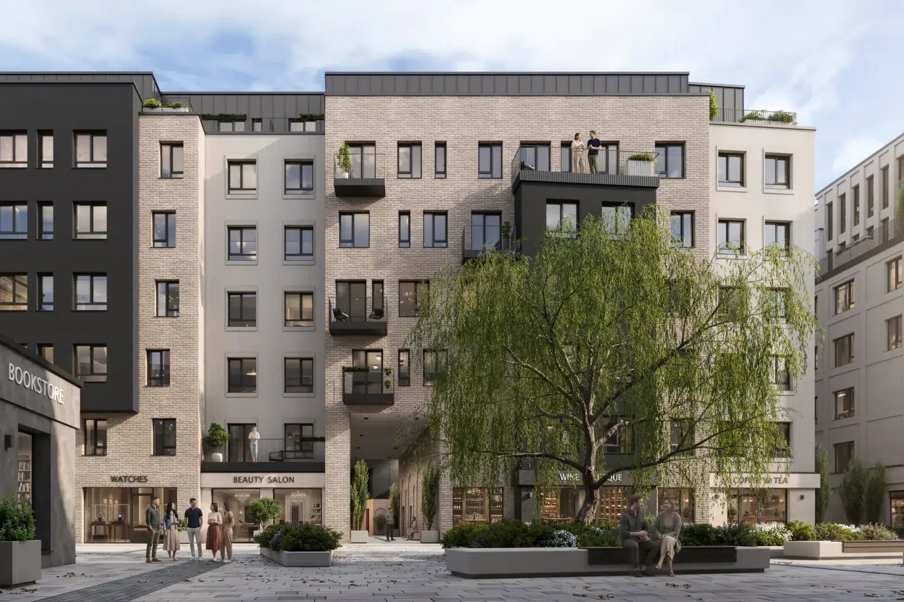
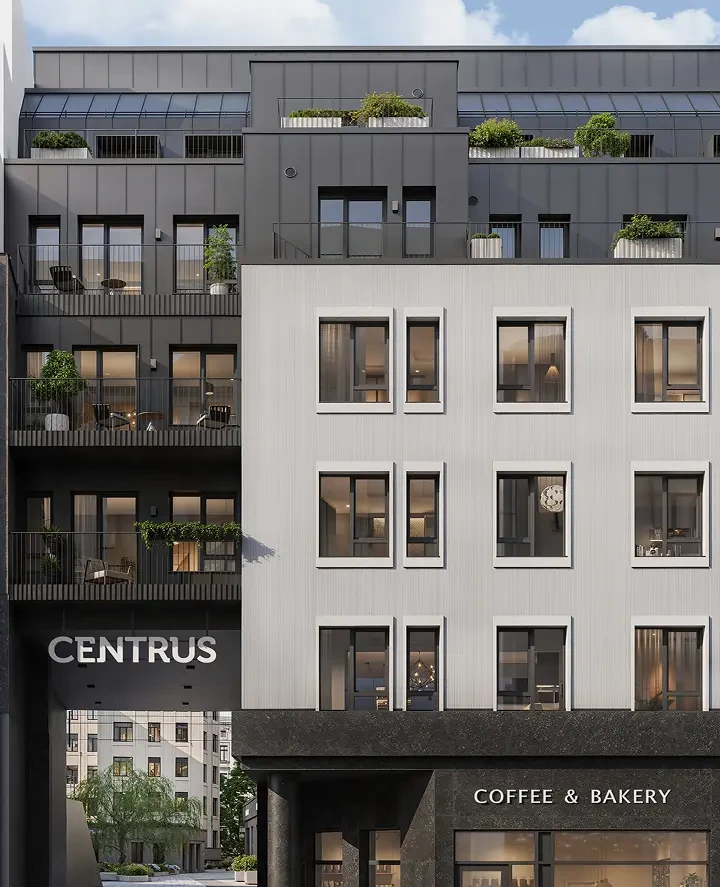
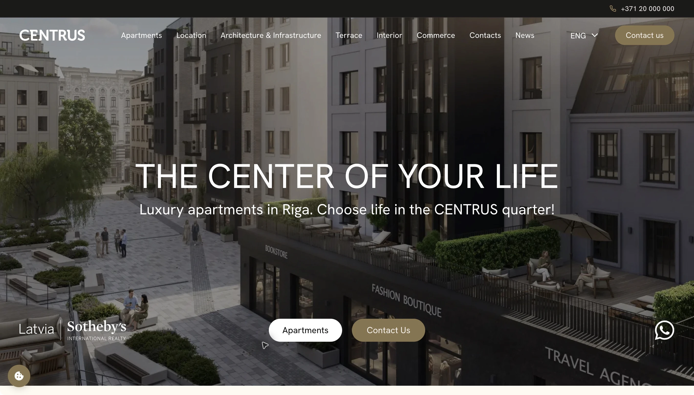
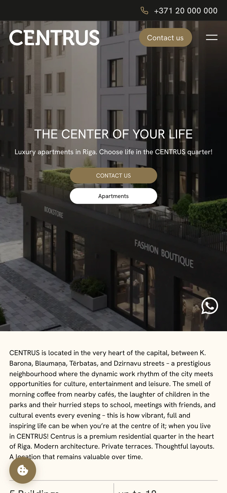
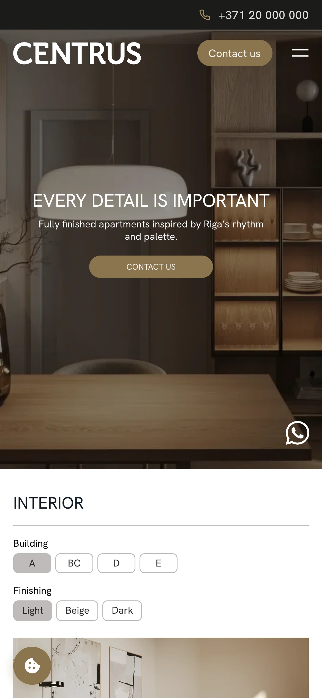
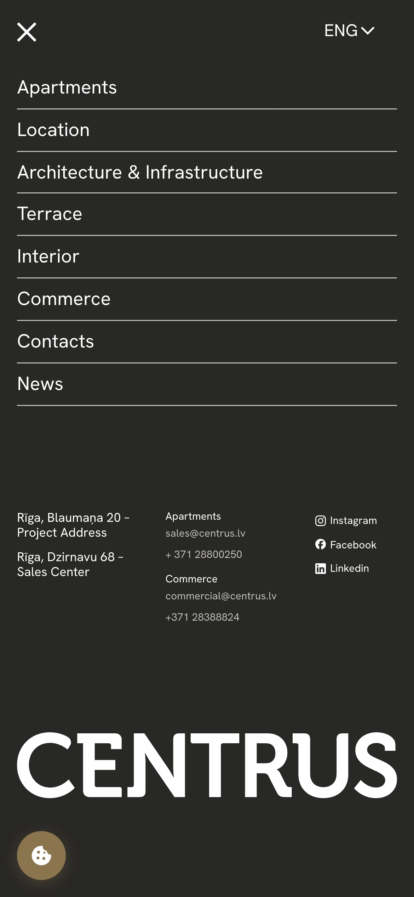
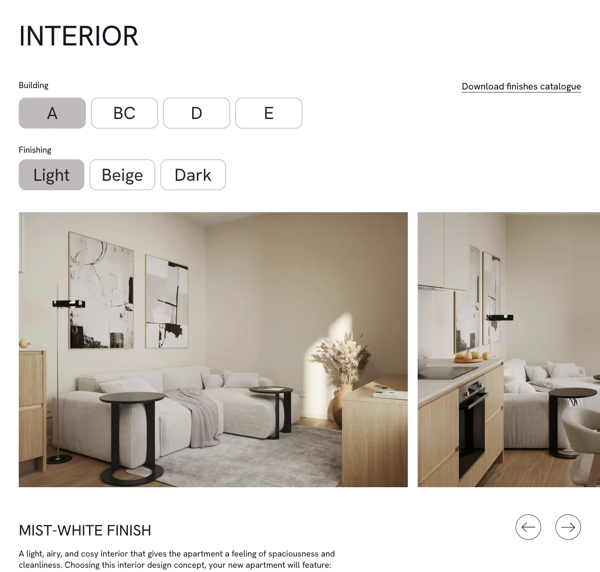